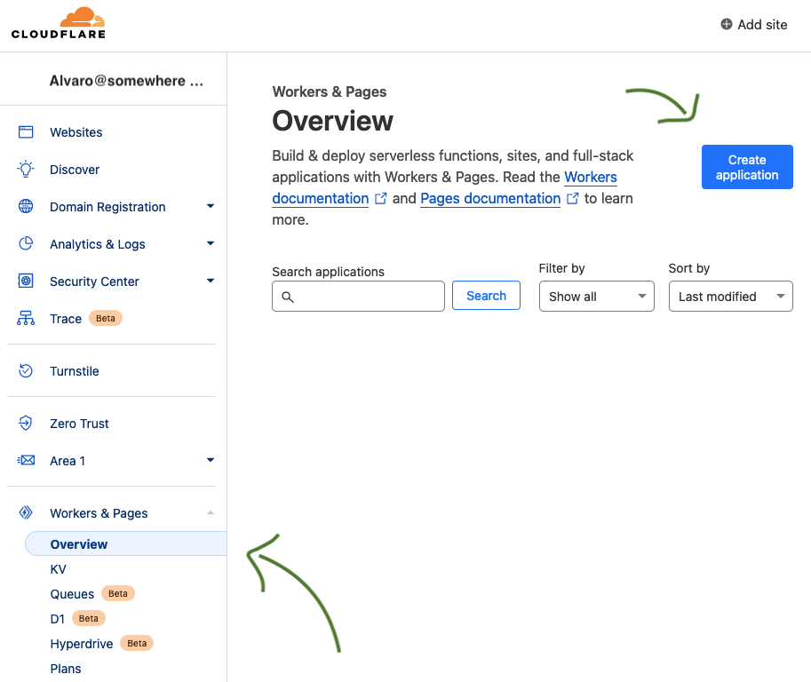
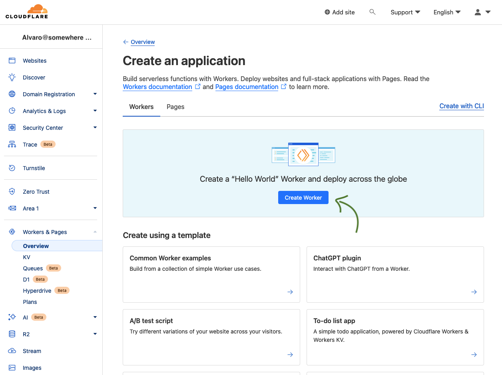
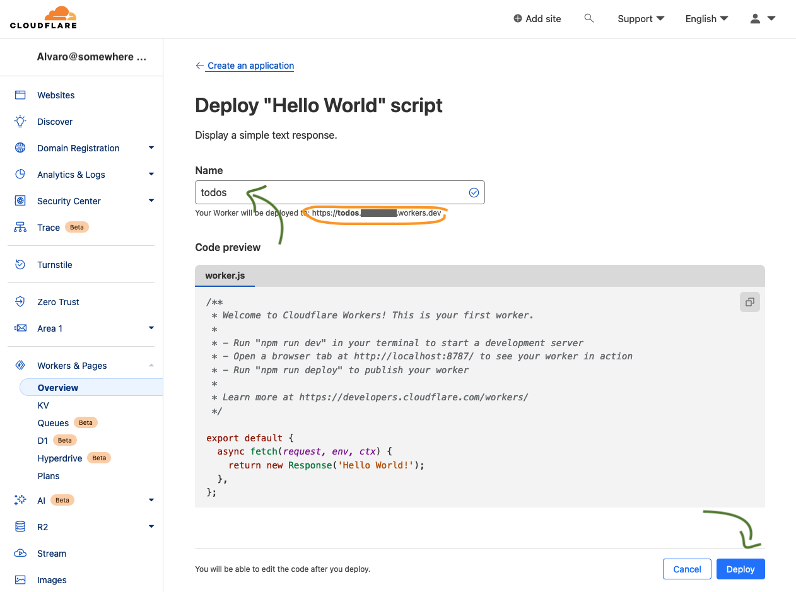
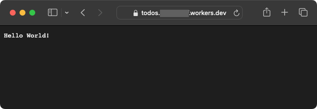
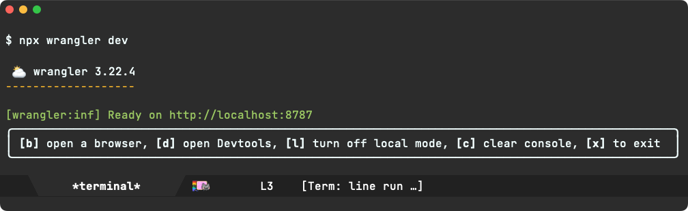
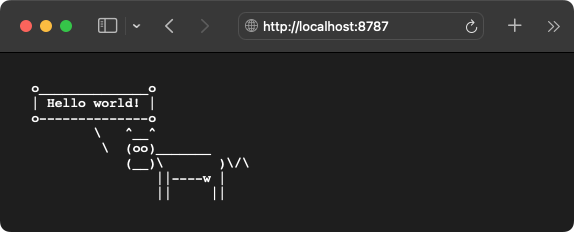
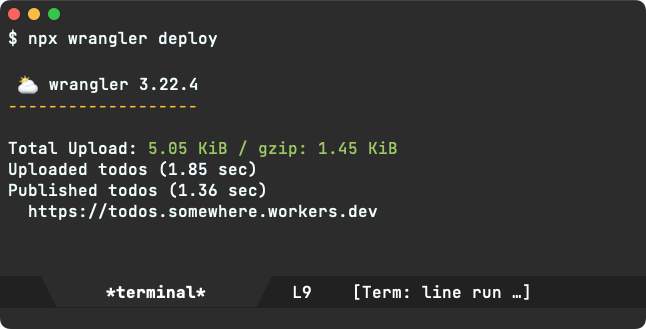
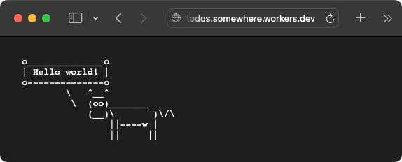

Álvaro Ramírez
A Cloudflare Workers primer: hello world
o______________o
| Hello world! |
o--------------o
\ ^__^
\ (oo)_______
(__)\ )\/\
||----w |
|| ||
Keen to get started with your Hello World Cloudflare Worker? Skip to the setup section.
A little background
The vast majority of my software development experience has been centered around client-side software. The few times I've needed a server-side component for a hobby project, I've historically provisioned a linux virtual machine somewhere and ran whatever services I needed. I have to admit though, I don't enjoy the provisioning process, configuration, maintenance, upgrades, database admin, etc. which take time away from the part I enjoy more: building and experimenting with features.
While containers have made things somewhat simpler, much of the maintenance tradeoffs remain.
These days, the server-managing overhead has been greatly reduced by "serverless" solutions. Odd terminology for a server offering, but I digress. It more or less refers to removing most of that additional responsibility that comes with managing your own servers and enabling you to focus on building your business logic. Having said that, I've typically shied away from these services, with the possibly irrational fear of vendor lock-in.
The thing is, if most of my potential server-side needs merely require an entry point (where I could route/handle incoming requests) and possibly some persistence (maybe a database), I should be able to abstract these things away and build server-side logic against portable abstractions. With that in place, maybe there's little vendor lock-in to worry about? Who knows, the devil's in the detail. If I keep shying away from these services, I'll never know, so maybe I should try some and see.
Let's try Cloudflare Workers
There are no shortages of serverless options offering functions as a service. Google Cloud, AWS Lambda, Azure Functions, Vercel Functions, Netlify Functions, Fastly, Cloudflare workers, I could go on…
While I haven't researched the different offerings, I had made a mental note to check out Cloudflare Workers as they had announced D1, their database backed by SQLite …and who doesn't love SQLite? ;) OK, I'm no expert here, but I have had a pleasant experience whenever I've used it. These days, even Emacs 29 got some SQLite love, which prompted me to add cell navigation/navigation and try other experiments.
D1 / SQLite in beta
Keep in mind that D1 is in public beta and not yet recommended for large production workloads. From the Cloudflare site:
"While the D1 team expects breaking changes and issues to be minimal, they may still occur. The D1 team generally does not recommend running large production workloads on beta products."
Workers cost
In terms of pricing (as of 2024-01-13), the free tier enables workers to handle up 100,000 requests per day. Plenty for trying things out.
In any case, we're only checking out Cloudflare's offering, so let's move on…
Settings up a new Cloudflare Worker (via web dash)
Cloudflare has a tiny snippet on their Workers landing page that sets things up rather quickly, but I won't be using it.
~/ $ npm create cloudflare -- my-app ~/ $ cd my-app ~/ $ npx wrangler deploy Published https://my-app.world.workers.dev
⚠️ Note: before you get copying and pasting, read on.
Cloudflare's snippet is helpful, but it does quite a bit under the hood. I'm somewhat of a node and serverless noob, so I wanted to understand things a little more and figure out the bare minimum needed to start a minimal Cloudflare Worker project.
Instead, we'll first click here and there over at https://dash.cloudflare.com to spin off our new worker from the web and later continue from the command line.


Give the worker a name. We'll call it "todos" to give ya a little sneak peak at what the next post is possibly about… But you can call it whatever you'd like. Keep in mind you'll need to use this name to refer to your new worker.

Congrats, you've now deployed a new worker. You can access it via the URL that looks something like https://todos.somewhere.workers.dev

This is great and all, but we want to build something with this new worker, so let's set up our local development environment…
Prerequisites
Create a new node project
We want to start with a bare bones node project, so let's do just that.
mkdir HelloCloudflareWorker
cd HelloCloudflareWorker
npm init -y
Install TypeScript (compiler)
I like some guardrails when targetting Javascript, so I'll use the TypeScript compiler in this project. Let's install it.
npm install --save-dev typescript npx tsc --init
Install Cloudflare Typescript types
To have Cloudflare types information accessible to the TypeScript compiler, we'll need to install that too.
npm install --save-dev @cloudflare/workers-types
Install Wrangler (Cloudflare tooling)
To manage your worker from the command-line, you'll need Cloudflare's wrangler tool. Let's install it.
npm install --save-dev wrangler
Point Wrangler to our worker
We're done installing things now. Let's point wrangler to our new worker by creating its config file.
wrangler.toml
name = "todos" main = "worker/worker.ts"
Worker entry point
By default, the worker we created using Cloudflare's dash has the following entry point:
export default { async fetch(request, env, ctx) { return new Response( 'Hello World!'): } }
However, this isn't yet included in our development environment. We need to write our first bit of code. You may have noticed our wrangler.toml is pointing to the main entry point (worker/worker.ts) and this file doesn't exist yet. Let's create it, though be sure to also create its owning directory:
mkdir worker
Now we can create our very own worker/worker.ts. Let's make the first change that shapes worker to our liking. Rather than just printing "Hello World", let's style things up using our cow friend. We'll create worker/worker.ts and include the spiffed up message.
worker/worker.ts
import { Env, ExecutionContext } from '@cloudflare/workers-types'; export default { async fetch(request: Request, env: Env, ctx: ExecutionContext): Promise<Response> { let defaultResponse = ` o______________o | Hello World! | o--------------o \\ ^__^ \\ (oo)\_______ (__)\\ )\\/\\ ||----w | || ||` return new Response(defaultResponse); } };
It's worth mentioning the import statement, since it brings Cloudflare's type information for both Env and ExecutionContext.
Running worker locally
Okay, we now have our worker/worker.ts code ready to go. Let's run it locally. For that we use the wrangler utility.
npx wrangler dev

With that, you'll notice the worker is now running locally and waiting to be visited at http://localhost:8787.

Deploying worker
When we first created the worker via https://dash.cloudflare.com, it automatically deployed to https://todos.somewhere.workers.dev. But our mods only ran locally. Let's deploy, again with the wrangler utility.
npx wrangler deploy

We're good to go. Let's point our browser to the worker's public location.

…and with that, we have a functional Cloudflare Worker and a local development environment to shape things up however we'd like. What would you use the worker for?
Gave this primer a try? I'd love to hear from ya (Mastodon / Twitter / Reddit / Email).
Enjoying this content? Find it useful?
Consider ✨sponsoring me✨ or buy ✨my iOS apps✨.